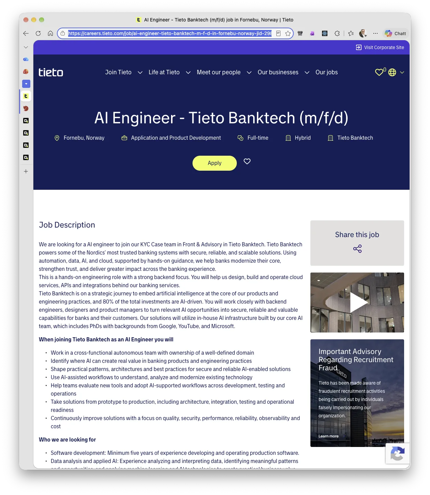
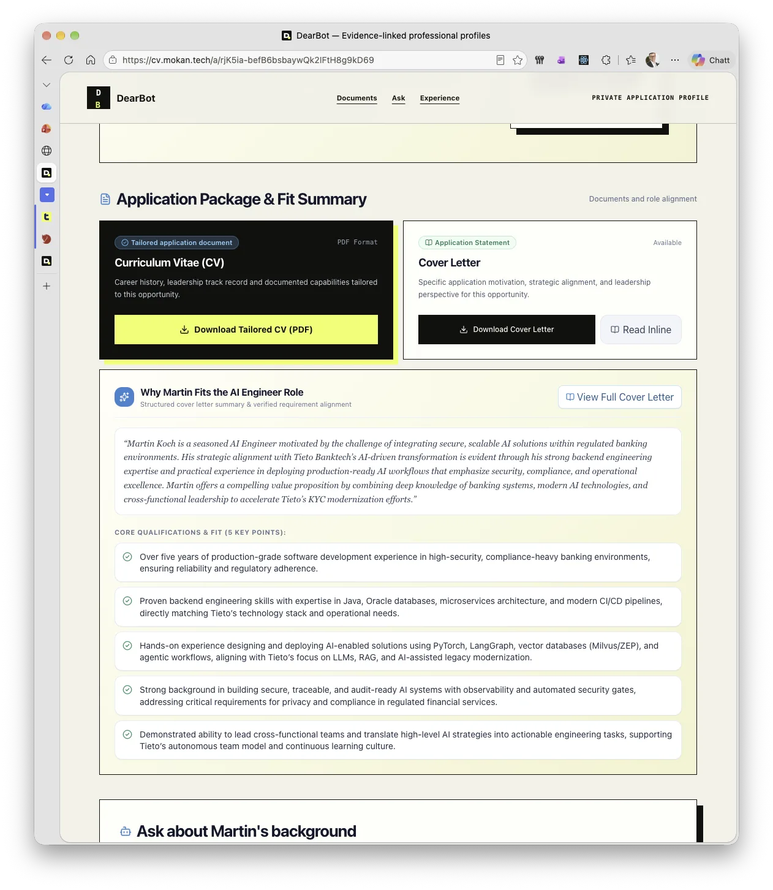
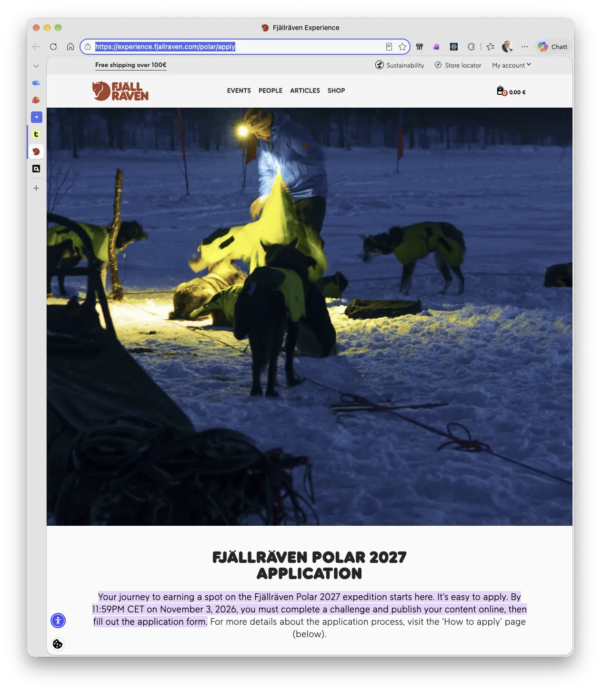
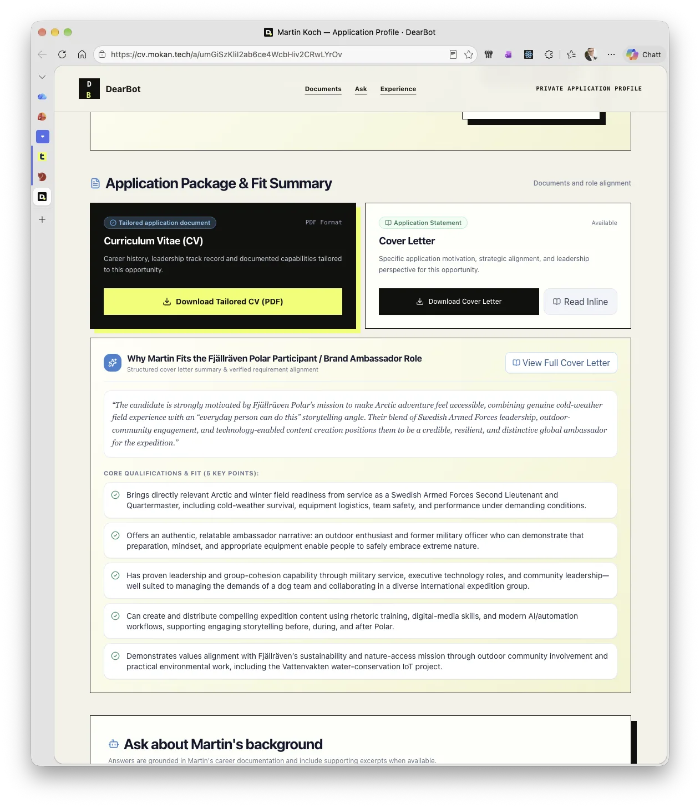

AI Engineer · Tieto Banktech
Technical relevance for a regulated banking and AI engineering role.




Dear Hiring Bot,
Sincerely,
Another Bot.
CVs are screened, summarized and ranked by software before a human ever meets them. DearBot treats that reality as an interface problem.
It turns your real career history into a targeted application package that works for humans, applicant tracking systems and AI agents—while keeping the source facts intact.
Connect a canonical Markdown CV or sync your documented career history.
source: verified
Use the job description as a relevance lens—not a licence to hallucinate.
mode: evidence-first
Create a tailored CV, cover letter, fit summary and interview questions.
output: role-aware
Optionally share a human-friendly profile with JSON, MCP and agent Q&A.
audience: everyone
The role changes what matters—not what happened. These two examples use the same career evidence to produce distinctly relevant application profiles.
A DearBot application run, condensed from role input to shareable profile.
Technical relevance for a regulated banking and AI engineering role.


The same evidence reframed for resilience, outdoor experience and storytelling.


If the source material cannot support a claim, DearBot says so.
A single-candidate, self-hosted application. Your evidence stays under your control.
PDFs and pages for people; structured endpoints and MCP for their assistants.
Clone it, inspect it and adapt the evidence model, interfaces and deployment to your own application workflow. DearBot is a single-candidate, self-hosted reference implementation.
$ git clone https://github.com/MokanGit/dearbot.git
Cloning into 'DearBot'...
Recruitment process successfully questioned.
$
Your move, hiring bot.